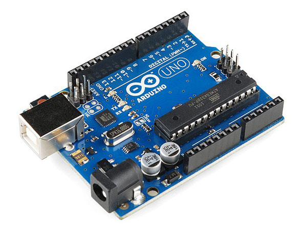
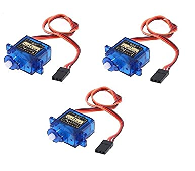
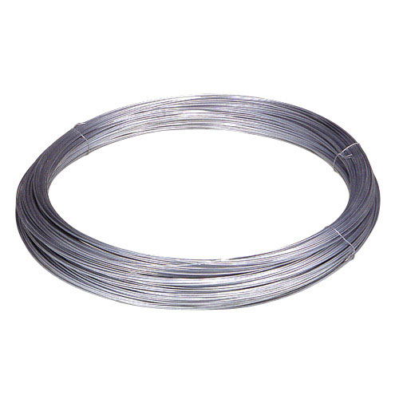
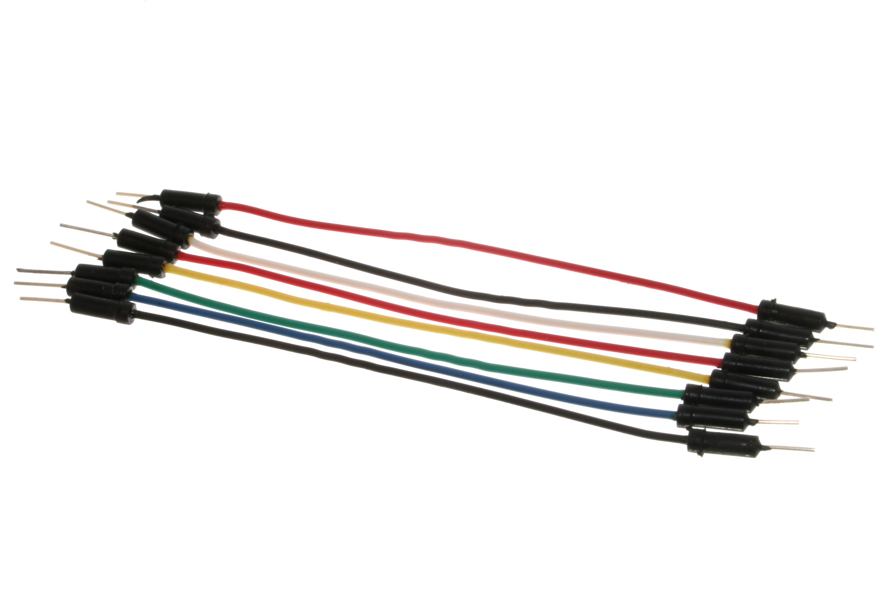
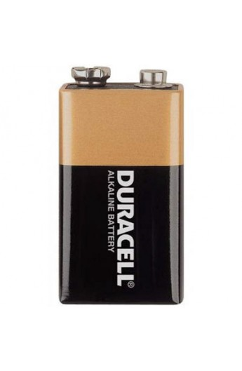
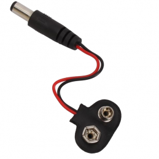

El arduino es fundamental con el daremos todas las funciones al robot.
Necesitaremos 3 servomotores, uno para la pata delantera, uno para la trasera, y otro para la pata del medio.
El alambre solo lo usaremos para hacer las patas del robot.
Para conectar los servos con el arduino.
Esta batería nos será útil para generar corriente eléctrica a todo el robot. La bateria que hemos comprado nosotros es de 9V.
El clip batería tendremos una forma de alimentar los circuitos del robot.
